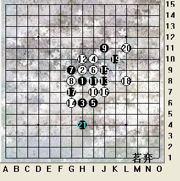
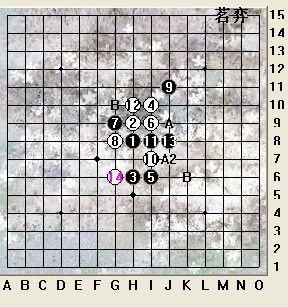
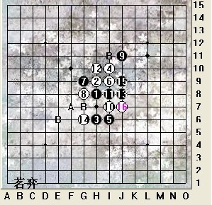
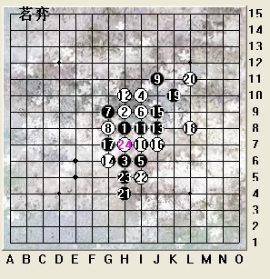
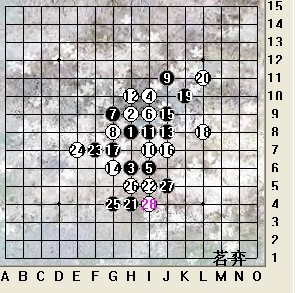
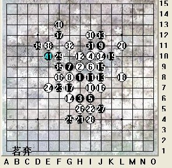
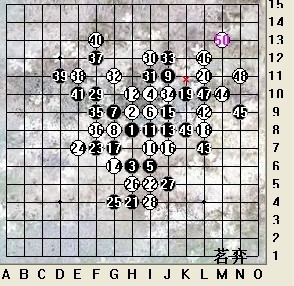

2011茗弈迎新年文波杯比赛棋评
#1 2011茗弈迎新年文波杯比赛棋评作者：茗弈小刀 发表时间：2011-1-16 19:41:05
寒冬仓促离去， 树叶开始发芽，小鸟也吱吱鸣叫，万物孕育生机，春天来了！新年来了！
茗弈文波杯比赛也拉开序幕。至1月12号比赛全部结束。
选其中一盘比较有代表性的局分析一下：

瑞星是四大平衡之一，也是广大棋友喜欢下的。我们知道瑞星前10手不能变，无论黑还是白，谁变谁输。这个12做了四角型，集中自己的子力，用进攻去防守，近几年也比较流行，但实战有的棋手不太喜欢，用他们的话说，白几乎是纯碎防守。当然仁者见仁，智者见智。
13大家也爱下在14位置活三，那个变化也颇纠缠。这个13比较老，但也是黑优局面。14手自从04年全国赛上出现之后,就在国内风靡了。依稀记得是蓝鲸老师率先下出的吧？

15手常见有以上几个变化，其中两个B点是新点，A,A2点最强。挡眠三相对保守，3下边那个点积极些，但白防在13右边，黑上下分段，后边不太好下。所以15手黑既要攻，又不要轻易破坏自己的棋型为佳。

选手选择了A点，16如放中间当然是为对方走棋，那么这个16后，17如上图，也有很多选择的点.其中B点都是最近在三手比较流行的，A点干脆果断。

选手下了这个17，是为了后边的一个变化，看来是有准备的。这个变化是棋情大师最早下。23先冲再在左下做棋，推荐。回到实战看看选手怎么下的：

选手23表面看稍显得保守，其实也是为了在左方打开局面，如果24防在下边破坏和21那边的连接，那么黑可能就顺势往左上走了；而如果24破坏黑与上边的连接，黑又可以在下边强攻，攻势强悍！看来选手也深入研究过这个局面，23意在让对手脱谱，也有试探的意思。白棋也不甘示弱，仔细分析后，24发现黑这个活2不可等闲，于是落在23外边，控制。25，27黑不甘心，也很无奈。28后黑面临考验了，29至关重要！

黑转身，29眠三，限制中发展。F线一条线上当然不好发展，黑试图与右边的棋连接，那么上面空间就大了。白当然要阻断。31手感觉在30上边去控制更好，与29也有联系。这个32以后其实黑在左边还是可以攻一下的，攻不出再利用先手转右边，选手这个33胆小了感觉，选手应该是觉得右边有危险吧，可这个33其实没解决实质问题。黑棋选手本来实力也很强的，可这次发挥不太好，后来感觉下得比较乱了，而35.37后，白这个38把黑左边的优势消化得精光。41败招！不知道大家有没好的41提议呢？欢迎跟贴参与。

白抓禁了，如图。
执白选手判断准确，计算也颇强，大局观好，比赛最后取得第一的好成绩。
［此帖子已被 茗弈小刀 在 2011-1-16 19:42:01 编辑过］
［ 黄药师 于 2011-1-16 19:44:08 时奖励此帖[金币加 100 威望加1］
［ 黄药师 于 2011-1-16 19:44:25 时花20金币送鲜花一朵］
［ 消逝的雨 于 2011-1-16 19:45:52 时花20金币送鲜花一朵］
［ 行云流水 于 2011-1-18 13:44:18 时奖励此帖[金币加 100 威望加1］
［ 梦醉南天 于 2011-1-27 9:03:54 时花20金币送鲜花一朵］
#2 Re:2011茗弈迎新年文波杯比赛棋评作者：消逝的雨 发表时间：2011-1-16 19:45:35
 沙发啦
沙发啦#3 Re:2011茗弈迎新年文波杯比赛棋评作者：无解 发表时间：2011-1-16 19:58:04
老木来啦~~ 顶起 很给力#4 Re:2011茗弈迎新年文波杯比赛棋评作者：安娜制作所 发表时间：2011-1-17 8:13:36
38手强#5 Re:2011茗弈迎新年文波杯比赛棋评作者：庞德 发表时间：2011-1-17 12:44:38
通盘感觉黑棋进攻还是挺弱。。前面的不说了。就从23开始吧。。23看似还行。但他有没有想过。24挡左边。。我看来。这个24比23好太多了。。23像一种折中棋。攻不强带防的那种。。瑞星前中盘黑棋不能压制住白棋。弄点出优势。后盘将无限被动。。黑棋要想杀棋。先手时。下手一定要刁。这个24往那一扔。这个25就显得有点弱了。26往中间一塞。。你说下面往哪攻往哪做棋。不知道黑棋下这儿的时候。当时有没有战略性。。29，30顺手。。31不管往哪下。32这点。都是白要占的强点。。33看似断一下。多给白棋一个L12的眠三。。后面那几手就不说了。无关痛痒的棋。。其实就我看来。整盘24这棋很重要。这个24之后。黑棋在右边机会很难有机会杀棋了。24挡不是仅是个活二。也直接影响了右边黑棋上下的连接。。其实这个变化黑棋的攻势是很强力的。。白棋稍弱一点就会被攻死。。以上仅个人点看法。［ 茗弈小刀 于 2011-1-18 10:14:14 时奖励此帖[金币加 100 威望加1］
#6 Re:2011茗弈迎新年文波杯比赛棋评作者：茗弈宽容 发表时间：2011-1-18 10:16:02
谢谢德儿的补充，分析得很精辟。